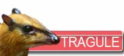
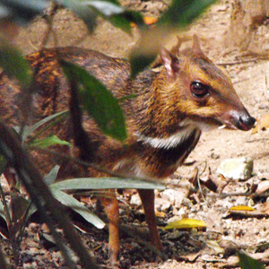
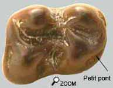
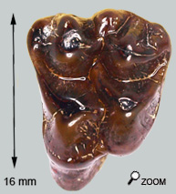
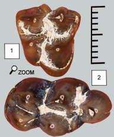

Difficile à classer

Dorcatherium appartient à la famille des tragules. Ces animaux existent encore et l'on compte 6 espèces qu'on rencontre dans les milieux boisés d'Afrique et d'Asie. De taille variable selon les espèces, les tragules restent globalement de petits animaux de sous-bois.
Si l'on rapproche, avec raison, les tragules des cervidés, on est obligé de remarquer un nombre important de caractères primitifs chez ces animaux. D'ailleurs l'allure générale de l'animal fait penser aux premiers mammifères avec une vague apparence de musaraigne. Les tragules ne possèdent pas de bois, et l'extrémité des pattes possède 4 doigts bien développés. S'ils sont polygastriques, la première chambre de l'estomac (rumen = chambre de fermentation) reste peu développée.
Pour ce qui concerne les faluns, les molaires conservent une organisation générale "en lune" sur le modèle des dents de cervidés mais elles montrent des pointes arrondies qui se distinguent des arêtes vives des dents de cervidés et qui caractérise le régime alimentaire de ces animaux.
En effet, les tragules consomment des feuillages tendres mais aussi des fruits charnus que les PM hautes permettent de décharner et que les molaires basses finissent de broyer.
D'ailleurs l'allure générale de l'animal (penchée vers l'avant) favorise la collecte de ces fruits tombés à terre.
Cachés dans la forêt...

Le genre Dorcatherium est arrivé par migration au MN 4 ou 5.
L’étude de l’écologie des tragules actuelles est particulièrement intéressante pour interpréter le mode de vie de Dorcatherium.
Ce sont des animaux solitaires et nocturnes, vivant dans la pénombre de forêts denses. Certaines espèces nagent très bien et vivent à proximité des cours d’eau dans lesquels ces animaux se jettent parfois pour échapper aux prédateurs.
Ce mode de vie actuel en dit long sur les paysages Miocène du val de Loire …
Pour une fois c'est facile à déterminer!

La dent de gauche est légèrement roulée et sans racine.
Cette molaire montre des cuspides ronds, un sillon vertical profond à l'arrière et la base du métaconide (tubercule antéro-interne) et surtout, à l'avant de la dent, une petite crête qui établit un pont entre les deux tubercules antérieurs.
Compte tenu de la petite taille de la dent, on peut estimer qu’il s’agit de Dorcatherium Guntianum, la plus petite tragule des faluns.

 Il existe une autre espèce un peu plus grande: Dorcatherium Crassum qui se rencontre dans les mêmes gisements que Guntianum. Au point qu’on s’est demandé s’il ne s’agissait pas d’une seule et même espèce. La différence de taille des dents s’expliquerait par un dimorphisme sexuel. L’hypothèse d’une espèce unique est étayée par la présence de dents inclassables de taille intermédiaire. J’ignore où l’on en est de ce débat…
Et enfin on pourra aussi mentionner D. Naui et D. Penecki... Cette dernière n'étant pas très courante. La famille est finalement assez nombreuse...
|